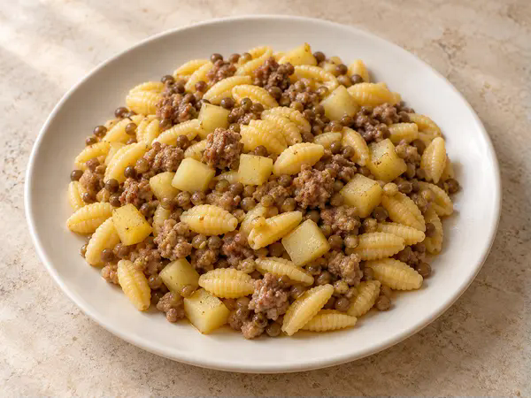
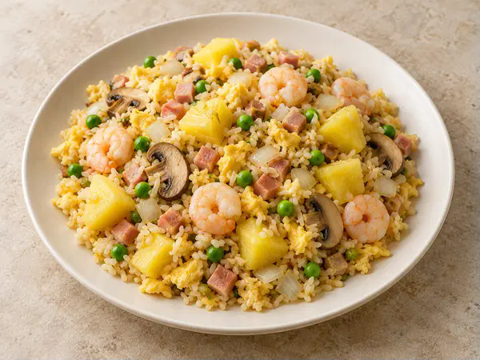
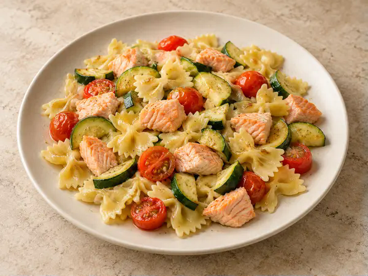
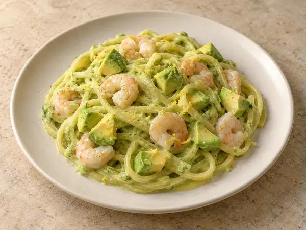
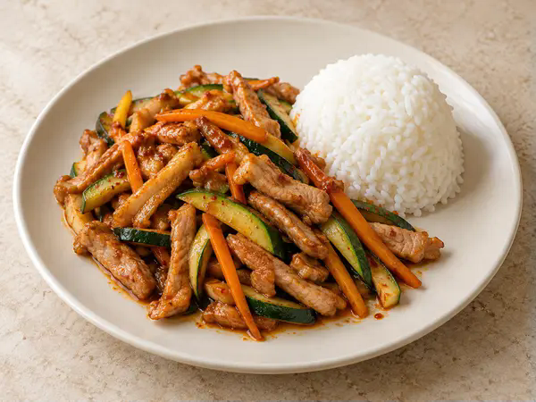
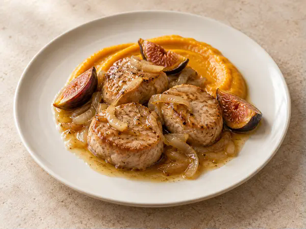
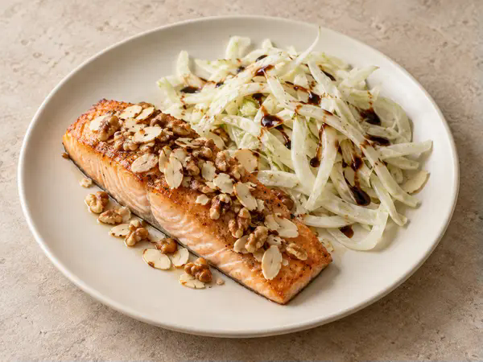
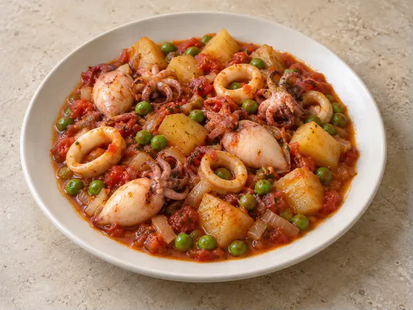

Gnocchetti sardi con patate, lenticchie e salsiccia
Gnocchetti sardi con patate morbide, lenticchie e salsiccia.
01
Valido solo a pranzo,
nel giorno sotto indicato

Gnocchetti sardi con patate morbide, lenticchie e salsiccia.
01

Ananas, uovo, piselli, cipolla, gamberetti*, prosciutto cotto e funghi.
0203

Farfalle con zucchine, bocconcini di salmone fresco e pomodorini.
0104

Crema di zucchine, gamberetti* e avocado, con una fresca nota di limone.
0102

Straccetti di maiale con zucchine e carote in salsa piccante, accompagnati da riso bianco al vapore.

Filetti di suino con crema di zucca e fichi, cipolla e burro.
07

Salmone con mandorle e noci, accompagnato da finocchi crudi conditi con aceto balsamico.
0408

Seppioline e calamari in umido con piselli, patate, pomodoro, cipolla e aglio.
14
Le immagini dei piatti, pur realistiche, sono generate con intelligenza artificiale e hanno scopo illustrativo.
Attendere la conferma del Ristorante per considerare valido l’ordine.